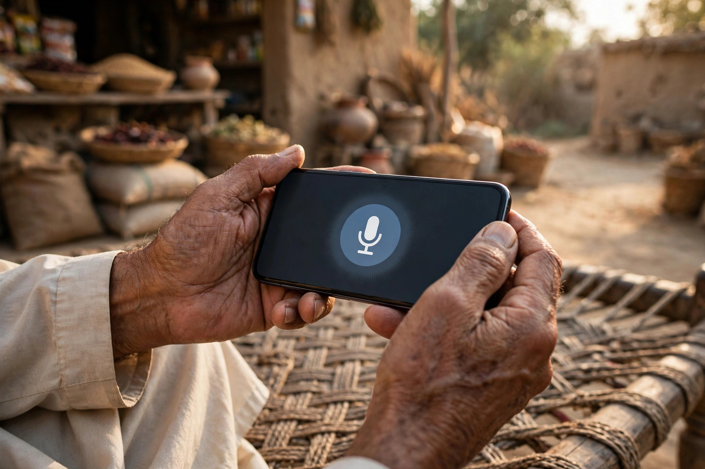

Every search begins as a sentence in someone’s head. A mother in Chowk Azam needs a school uniform before Monday. A truck driver needs a tyre repaired before dark. A farmer needs a part for his tractor today, not next week. When they pick up the phone, those needs become short, practical phrases, and the businesses whose profiles and pages use similar words are the ones Google connects them with. Keywords are simply those phrases, studied and used with care.
This article explains how to discover the words Chowk Azam customers use, the patterns most local searches follow, and how to place those words naturally in a profile description or web page. It also warns against the old habit of stuffing keywords unnaturally, which reads badly and can harm a listing. Zaheer Seo Expert is based in Layyah and does this research for Chowk Azam businesses online, but the listening method described here is something any owner can start today, free, at their own counter.
Listen First: Your Counter Is a Research Tool
The best keyword research for a small-town business begins with listening. Notice the exact words customers use when they walk in or call. They rarely use catalogue terms. They name the problem, the occasion or the person it is for: uniform for a daughter, medicine for back pain, the part that connects a trolley to a tractor. Keep a small notebook for a month and write these phrases down as you hear them.
If customers keep asking whether you repair a particular machine or stock a particular brand, that phrase belongs in your profile and on your site, answered in plain words. Research tools can add suggestions later, but the counter notebook is truer than any software for a town the size of Chowk Azam.

The Patterns Most Local Searches Follow
Local searches usually combine a few building blocks: the thing needed, sometimes a detail like a brand or size, and either the town name or the words near me. A traveller adds urgency words like open now. A farmer adds a season or a crop. A parent adds a school name or a class. Understanding these blocks lets a business owner predict phrases without any special tools.
Many searches in this region mix English words with Roman Urdu and local product names, and Google is reasonably good at matching these variations to businesses that describe themselves clearly. You do not need to write every possible spelling. You need your main products and services named the most common way, in natural sentences, with the town mentioned where it genuinely applies. Our page on SEO services in Chowk Azam shows how researched keywords feed into profiles and pages.
- The product or service in everyday words
- A brand, size or problem where it matters
- Chowk Azam, a nearby area, or near me
- Urgency words such as open now, for travellers
- Seasonal words tied to crops, weather or school terms
Matching Words on Your Profile and Pages
Once you know the phrases, place them where they belong. The business description on your Google profile should name your main lines in customer language, in flowing sentences, not a list of repeated words. On a website, give important services their own page or section with a clear heading, because a page about one thing matches searches for that thing far better than a single page about everything.
Write for the reader first. A sentence that a customer finds clear and useful is almost always a sentence Google understands too. Check by reading aloud: if you would not say it across the counter, rewrite it. Businesses in the markets here can also learn from how traders present goods, matching the search thinking described in our article on SEO for Chowk Azam shops and markets.

Seasonal and Event Keywords Around Chowk Azam
Search language in an agricultural market town follows the year. Before sowing, seed and fertiliser phrases rise. During harvest, repairs, transport and grain buyers dominate. Weddings, school openings, Eid shopping and winter clothing each bring their own wave of phrases. A business that updates its description and posts a few weeks before its season catches searches that a static listing misses.
You cannot predict every event, but you can keep your main seasonal lines current so that when the wave comes, your wording is already in place. Small, timely updates are worth more than a large website written once and forgotten for years.
What to Avoid: Stuffing and Copying
The oldest mistake in SEO is repeating a phrase again and again in the hope Google will reward it. It will not. Awkward, stuffed text reads as dishonest to customers and can cause Google to trust a page or profile less. Your business name field deserves special care: it must be your real name as customers know it, not a string of products and town names, however tempting that looks.
Copying a competitor’s wording has the same problem in reverse: it makes two businesses indistinguishable, and the searcher chooses by reviews and photos instead. Your advantage in Chowk Azam is specificity, the real brands you stock, the real repairs you do, the real villages you deliver to. Words drawn from your own trade, honestly written, are both safer and more persuasive.
Turning Listening Into a Monthly Habit
Keyword work is not a single project. A practical rhythm for a busy owner is simple: keep the counter notebook going, review it monthly, and adjust one thing at a time, a description line, a new service entry, a seasonal photo caption. Over a year these small adjustments build a presence that closely matches how the town actually searches.
For owners who want the research done for them, keyword research is one of the core services Zaheer Seo Expert provides from Layyah, delivered online and by phone for Chowk Azam clients. There is no office in Chowk Azam; the research and updates are handled remotely. Whether you do it yourself or with help, the principle stays the same: your customers are already telling you the keywords. The work is mostly learning to hear them.
Frequently Asked Questions
What is a keyword, in simple words?
It is the phrase a customer types or speaks into Google when looking for something, like a product, a service or a repair near Chowk Azam. Businesses study these phrases so their profiles and pages use the same everyday words customers use.
How do I find keywords without paid tools?
Listen at your counter and on calls, and write down the exact words customers use for your products and services. Also type your main products into Google and note the suggestions it offers. For a small-town business, this free method is usually enough.
Should my keywords be in English or Urdu?
Use clear, simple English for the main text, with the product, brand and local names exactly as customers say them. Google matches mixed and Roman Urdu searches to well-written pages reasonably well, so natural wording matters more than the script choice.
How many keywords should one page target?
One page should focus on one main topic, such as a single service or product line, described thoroughly. Trying to cover everything on one page weakens all of it. Several focused pages, or a focused profile description, work far better.
Want More Customers From Google?
Call 0327 7350830 or email seozaheer14@gmail.com. Zaheer Seo Expert, Layyah - Rajan Shah Road, Rana Nagar, Chak 116 TDA, Pakistan. Open 24 hours.
Get Your SEO Strategy →